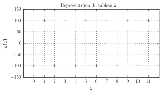
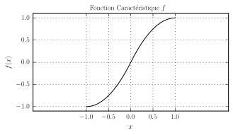

S1916 - Analyse et Compression du Signal Audionumérique - Examen
By Sébastien Boisgérault, Mines ParisTech
16 mars 2017
Contents
Modalités
Durée: 1h30.
Autorisés:
tous documents (sous forme papier ou électronique),
calculette, tablette, ordinateur portable, etc.
Interdit:
- toute forme de communication: avec le voisin, par Internet, par téléphone, etc.
Questions
Monkey’s Audio (APE)
Sur un forum Internet, un audiophile décrit les résultats d’un test du programme de compression Monkey’s Audio:
File Info : 44100Hz; 2 channel; 16 bit; 00:55:36.36
Results : 1039,63x; 345728748 bytes in 00:00:03.2091836 seconds;Pensez-vous que l’algorithme utilisé soit sans perte ?
Un Format Audio Inconnu
Un fichier audio commence par le contenu (hexadécimal) suivant:
0x66 0x4C 0x61 0x43Quel est à votre avis le format du fichier ? Pour information:
>>> for i in range(65, 122+1):
... print chr(i),
...
A B C D E F G H I J K L M N O P Q R S T
U V W X Y Z [ \ ] ^ _ ` a b c d e f g h
i j k l m n o p q r s t u v w x y zNotation ECTS
Le Système européen de transfert et d’accumulation de crédits (ECTS) préconise l’utilisation de l’échelle suivante pour noter les examens:
| Note | Sous-Groupe |
|---|---|
| A | les 10% meilleurs |
| B | les 25% suivants |
| C | les 30% suivants |
| D | les 25% suivants |
| E | les 10% restants |
Quelle est la quantité d’information présente en moyenne dans une note ECTS ? Comment pourrait-on augmenter cette grandeur en jouant sur la taille des sous-groupes et dans quelle proportion ? Est-il possible de concevoir un code sans préfixe pour la note ECTS de longueur moyenne 2 bits ? De longueur moyenne strictement inférieure à 3 bits ?
Code de Rice
Soit x le tableau d’entiers 8 bits signés défini par le code
>>> x = 100 * ones(12, dtype=int8)
>>> x[::2] = -100
Un code de Rice va-t’il réduire la taille de ce signal ? Pour information:
>>> rice.from_frame(x, signed=True)
rice(b=6, signed=True)On se propose ensuite d’appliquer le code de Rice non plus aux amplitudes de x mais au signal y de ses différences. Le calcul de y par le code ci-dessous est-il correct ?
>>> y = diff(r_[0,x])Sur le principe, cette nouvelle approche peut-elle être couronnée de succès ?
Quantificateur Non-Linéaire
Le code ci-dessous définit une fonction caractéristique \(f\) sur \([-1,1]\):
def f(x):
return (x >= 0) * (2 * x - x * x) + (x < 0) * (2 * x + x * x)
Pour quelle distribution de probabilité \(p(x)\) des données le quantificateur associé maximise-t’il l’entropie ?
Filtre Passe-Bas et Décimation
Soit \(\Delta f = 16 \, \mathrm{kHz}\) une fréquence d’échantillonnage et \(\Delta t\) la période correspondante. Déterminer la suite des valeurs \(h(t=n\Delta t)\) de la réponse impulsionnelle associée au filtre passe-bas idéal de fréquence de coupure \(f_c = 4 \, \mathrm{kHz}\) et de fréquence d’échantillonnage \(\Delta f\).
Considérez ensuite le signal \(h_2\) obtenu par une décimation d’un facteur 2 du signal \(h\). Quel doit être sa transformée de Fourier \(h_2(f)\) ? Et par conséquent sa représentation temporelle \(h_2(t)\) ? Calculer ensuite directement \(h_2(t)\) à partir de \(h(t)\) et vérifier la cohérence du résultat.
Hauteur d’une Voix
Un programme informatique produit une estimation “instable” de la hauteur d’une voix prononçant un phonème, estimation qui alterne grossièrement entre les valeurs 240 Hz et 120 Hz. Quelle est vraisemblablement la vraie hauteur de la voix sur cet extrait ? Ce même mécanisme produit par moments une estimation encore plus basse de la hauteur. Quelle est cette valeur à votre avis ?
Filtre Auto-Régressif
Un filtre autorégressif cadencé à \(\Delta f = 16\) kHz est décrit par la fonction de transfert \[ h(z) = \frac{z^2}{z^2 - 0.25}. \] Ce filtre est-il stable ? Déterminer la relation de récurrence reliant ses valeurs en entrée \(u_n = u(n\Delta t)\) et en sortie \(y_n = y(n\Delta t)\). Quel est sa réponse impulsionelle \(h(t)\) ? Quelle est l’amplitude du signal de sortie lorsque \(u(t) = \sin (2\pi f t)\) avec \(f=8\) kHz ?
Audibilité de Sons Purs
On considère le signal numérique \(x(t) = 2 \times 10^{-4} \times \sin (2 \pi f t)\) représenté par des valeurs flottantes dans l’intervalle \([-1.0, 1.0]\). Dire si ce signal est audible lorsqu’il est produit avec l’amplification standard pour les fréquences \(f = 100\) Hz, \(f=1000\) Hz et \(f = 10000\) Hz. A laquelle de ces trois fréquences le son parait-il être le plus fort ?